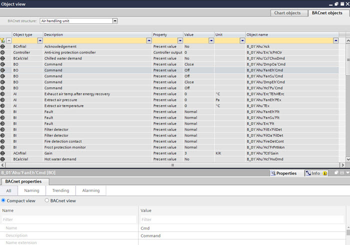

BACnet objects list

The BACnet objects list shows all BACnet objects of the selected plant according to folder structure.
Select a plant or a folder from the BACnet structure drop-down list box to display its BACnet objects.
Column | Description |
|---|---|
Object type | The object type of the BACnet object. |
Description | The description of the BACnet object. |
Property | The description of the main value of the BACnet object. |
Value | The value of the main value property. |
Unit | The unit of analog values. |
Object name | The full object name of the BACnet object. |
Show properties of a BACnet object
- Select a BACnet object in the list.
- The properties of the BACnet object are shown in the BACnet properties tab.
BACnet properties tab
Navigate to a BACnet object in the Programming editor
- Do one of the following:
- Right-click a BACnet object in the list and select Show in program.
- Double-click a BACnet object in the list.
- The corresponding element is shown in the Programming editor, if it is represented in the chart.
Programming editor
Create a function block from a BACnet object
- Drag a BACnet object from the BACnet objects list to the Programming editor.
- A matching function block is created in the Programming editor.
Programming editor
Assign a BACnet object to a function block
- Drag a BACnet object from the BACnet objects list to a compatible function block in the Programming editor.
- The BACnet object is assigned to the function block.
Programming editor